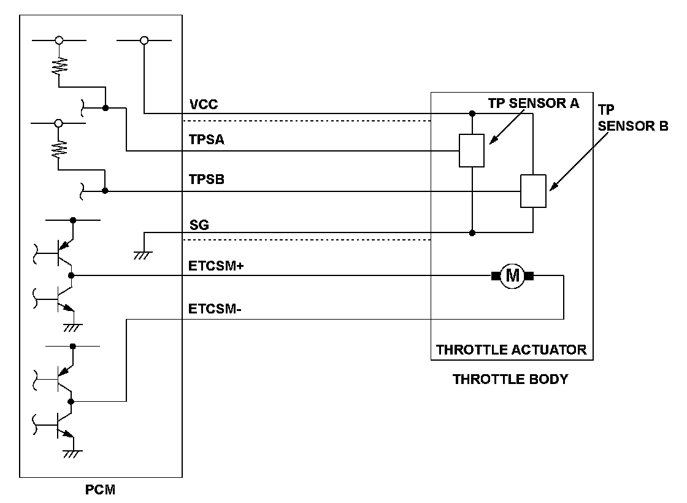
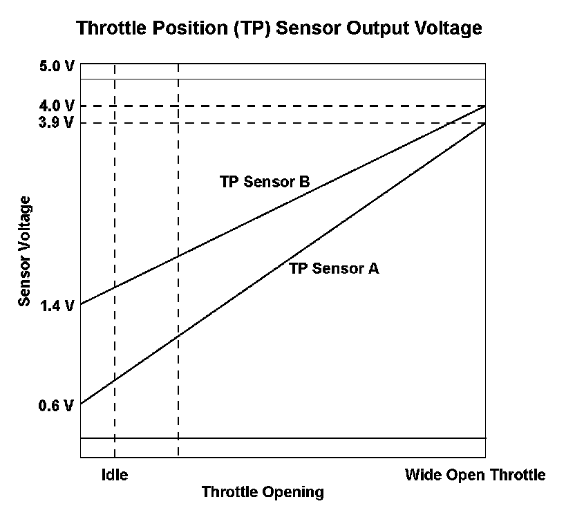
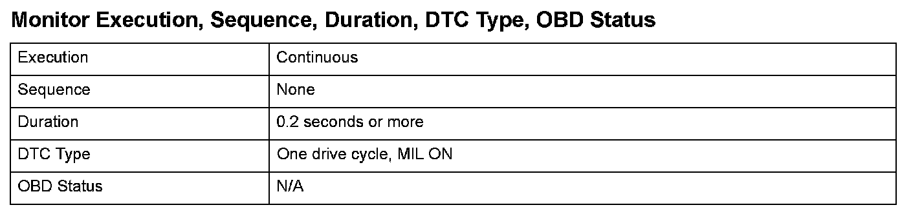
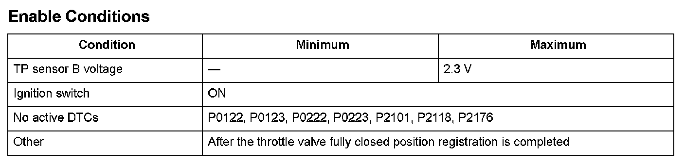
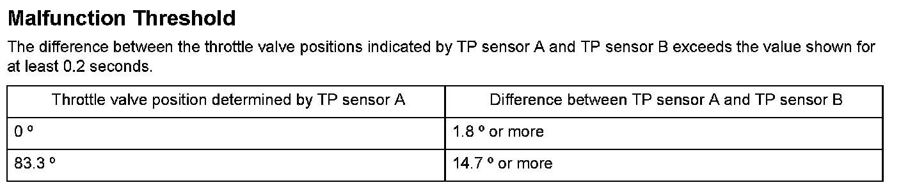

Advanced Diagnostics
DTC P2135: Throttle Position (TP) Sensor A/B Voltage Incorrect Correlation

General Description
The powertrain control module (PCM) controls the throttle valve opening. The system is composed of the throttle actuator, the throttle valve, throttle position (TP) sensors A and B, the accelerator pedal position (APP) sensor, and the PCM. The APP sensor is operated via the throttle cable to determine the accelerator opening value when the driver presses the accelerator pedal. The accelerator pedal opening value is converted to a signal in the APP sensor and transmitted to the PCM to compute the target position.
The PCM determines the throttle valve target position according to the signal received and operates the throttle actuator to move the throttle valve to the target position. The actual throttle valve position is determined by TP sensor A, installed in the throttle body.
The PCM compares the voltages and the throttle valve positions of TP sensor A and TP sensor B. If the difference of the voltages or the throttle valve positions is a fixed value or below for a set time, the PCM detects a malfunction in the relationship between TP sensor A and TP sensor B, and stores a DTC.

Monitor Execution, Sequence, Duration, DTC Type, OBD Status

Enable Conditions

Malfunction Threshold
Diagnosis Details
Conditions for illuminating the MIL
When a malfunction is detected, the MIL comes on and the DTC and the freeze frame data are stored in the PCM memory.
Conditions for clearing the MIL
The MIL will be cleared if the malfunction does not recur during three consecutive trips in which the diagnostic runs.
The MIL, the DTC, and the freeze frame data can be cleared by using the scan tool Clear command or by disconnecting the battery.